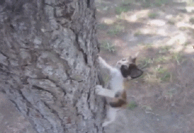
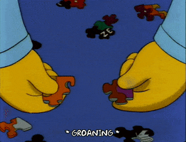

There is a magical waterfall in the mountains of Utah. The challenge is to climb 350 feet into the air. Those who reach the top can witness the glory of nature . Through the sweat and muscle soreness , you can breath in the crisp air. You can bask in the satisfaction as you look at the magical waterfall.
This case eluded detective Meowy. During all her years on the force (which is one year), she has yet to encounter such a methodical thief. Detective Meowy's treats have been slowly disappearing . Detective Meowy her deductive prowess and noticed a trail of crumbs leading to the trashcan. "What are you doing meow meow?" a voice asked. Meowy looked up startled at her mom and blinked incredulously as her mom continued talking, "You finished your treats last night silly kitty."
It's an incredible feeling of freedom and accomplishment when you are able to reach the pinnacle of something. Every step you took to get there is meaningful . Ari kept that in mind when as she grabbed another rough section of the tree. A flicker of worry crossed Ari's mind; the higher she climbed, the tougher it'll be to return to the ground . The worry faded as she concluded it was a question for future Ari. Ari paused to glance below. She caught a glimpse of her partner with her arms stretched wide, preparing to catch her at any time. Ari smiled and shook her head at her partner's loving yet silly gesture. 

Word List: